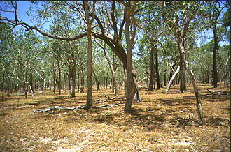

Savanna

A savanna or savannah is a grassland ecosystem characterised by the trees being sufficiently widely spaced so that the canopy does not close. The open canopy allows sufficient light to reach the ground to support an unbroken herbaceous layer consisting primarily of grasses.
Savannas /maintain an open canopy despite a high tree density. It is often believed that savannas feature widely spaced, scattered trees. However, in many savannas, tree densities are higher and trees are more regularly spaced than in forest. The South American savanna types cerrado sensu stricto and cerrado dense typically have densities of trees similar to or higher than that found in South American tropical forests, with savanna ranging 800–3300 trees/ha and adjacent forests with 800–2000 trees/ha. Similarly Guinean savanna has 129 trees/ha, compared to 103 for riparian forest, while Eastern Australian sclerophyll forests have average tree densities of approximately 100 per hectare, comparable to savannas in the same region.
Savannas are also characterised by seasonal water availability, with the majority of rainfall confined to one season; they are associated with several types of biomes, and are frequently in a transitional zone between forest and desert or grassland. Savanna covers approximately 20% of the Earth's land area.